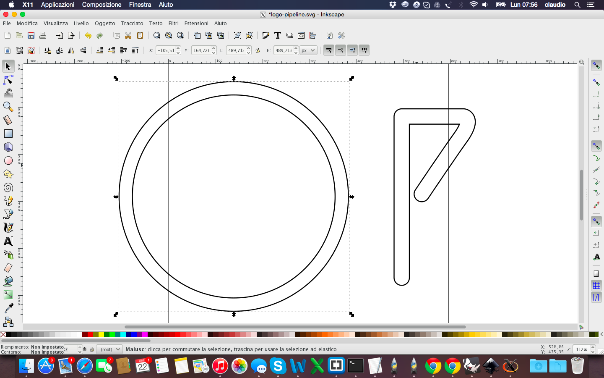

Fab Academy 15
Claudio Pecere
Claudio Pecere
Master Degree in Business Administration, controller for three years in an international company . Whilst working I developed two mobile applications in the field of tourism and publishing. Currently, through Dhitech Scarl, I deal with management of research projects, study of business models related to open innovation with focus on FabLab and implementation of such activities inside the Hub of Knowledge of Brindisi.
I am a freelance journalist since 2010.
The idea is to create a series of modular and intelligent pots. We want to combine the look of the design of multiple objects (maybe 5) modular and interchangeable, and the sensors and electronics in order to monitor the health status of various plants
The first lesson of Fab Acadamy 2015 was a presentation of course, the concept of Fab Lab and digital fabrication a first introduction of tools to build the web site that will contain my background, all my experience in Fab Academy and especially my final project.

I had never developed anything before Fab Academy and I had never even built a website. I built my site using a template bootstrap and then I developed it in html, with the use of CSS, through brackets. To better understand html and CSS I immediately looked for a nice template to open with brackets to modify it and check their effects. I quickly chose this template and from there I started to change the parts that interested me in terms of graphics and building the various pages to better document my Fab Academy
The other topic of the week but fundamental for the entire route of the Fab Academy has been the creation and management of the repository project. At OpenDot we used GitHub as a matter of easy and immediacy of use. We decided to manage all the commands from bash, then we synchronized the repository created by our tutor, entered the credentials from the terminal and did pull of ours Fab Academy folders. 
The commands you use most often are:
The last step of the first week was to define a concept of the final project. I thought of two projects:


At the end I chose to develop my final project together with my colleague Youssef Bouali in order to produce a network of smart pots to monitor the health of plants 

During second week , the task was to start from the sketch drawn to design the draft final project and achieve its design in 3d. Again, given my backgroud, I had to use sofware and concepts that I had never used before. The goal was to try, make mistakes and learn from more software as possible, both in 2D and in 3D. First I had to choose what to draw, as the project is not yet defined in detail. I decided to set up the project on a wearable device, so that people to track have with them a bracelet that I hope in the end could have a nice design. I've started to draw in 2D using Inksacape that at first glance I thought it was simple and effective for a beginner like me.
Beyond the difficulty in obtaining a good quality file svg of FabLab logo, I managed to get an acceptable design in 2D. The next step, and the most complex, was to model the svg files in 3D. I mainly used blender and to do that I had to follow of course many video tutorials and guides found on line. With blender I extruded the files in 2D and especially I rotated the parts in the direction I wanted. Then I defined color of materials and tried to change the individual faces of the object created.


In the last line I have also tried to realize the rendering of the image, but without animation and always using blender

During the design phase, I also used FreeCAD. But failing to install the software on the Mac I had to use it on another computer windows. FreeCAD seemed very intuitive compared to Blender but once you pass the initial impact it seemed more complete.
The last program I tried was Rhino. I re-extruded and fixed the svg file and then placed and rotated the logo. I fixed finally also the size of the bracelet and whole viewed as a solid object.

The lesson learned is that blender is a very interesting software, as completely open, developed in python and definitely good for the non-geometric figures. Rhino, however, after an initial block in understanding all commands it seemed the best for geometrical figures to be realized in a simple and very precise way and also to fix non-geometric figures such as drawn in blender and then optimized in Rhino
All the files are available for download here:
The week dedicated to learning cuttings tools was mainly focused on laser cutting and vinyl cutting. The objective was to provide an exercise by designing and cutting an object whose parts were modular and then assembled to achieve a structure in 3D. So designing in 2D to cut an object in 3D!

I started the week looking at some completed projects with cutting machines, mainly with laser cutting, to get inspired about my exercise. I focused my research on Thingiverse and Instructables and then some images on the web. At the end I decided to make a stand for my iPad.

As for the previous week, to design in 2D I used Inkscape, following some tutorials to understand how to best set the edges and points to be embedded in a piece and another.


During the design had to also consider the instructions of the lab regarding the thickness of the sheets (3mm) of wood to be used and the kerf (0,12mm) of the laser cutting machine. All this has been necessary to design in a correct way the joints between the various parts.

Before proceeding to define the edges and save the file in pdf format and then proceed to cut, I entered the FabLab logo and text to engrave on the surface where it will be based the iPad


After designing the stand, I continued with the cut. I saved the file in inkscape in dxf format and then i open it on Rhino (4 format) to start cutting. I had some problem with the speed of cutting, maybe because the wood sheet was deformed. So i had external lines cutted in some area and and not in other areas. To resove this problem i fixed a lower speed of cutting. An other problem was about the angle of a piece that overlaps the hole of another piece: a design problem. I learned that inkscape is a good software for design this kind of project but especially in case of design some angular holes it's better to use Rhino!

Once i resolved design problems i cutted again my project and after i assembled it. This is the result:


During the exercise with the Vinyl Cutter I decided to make a sticker with the logo of my app Pipeline. So I started from the vector logo made previously and I opened in Inkscape to fill the logo design and save it in SVG and DXF  
Then I opened the project with Rhino to verify the accuracy of the drawing and in fact I had to fix it again before cutting 
Before the cut I had to save the file in EPS format to allow the machine to read through software SignBlazer. Unfortunately and strangely the file was not complete, so I had to first open it and save it with CoreDraw in CMX format 

The phase of the cut went according to plan: I set speed and pressure of the blade and booted the machine 
Vinyl Cutter from Claudio Pecere on Vimeo.
The last step was to remove the excess with the help of a utility knife and apply transparent tape to paste in the future the final object on a surface. This is the final result
All the files are available for download here:
During Week 4 the goal was to make a FabISP in-circuit program. To do this it was necessary to choose one of two FABISP proposed during the weekly class, milling the board and the circuit, soldering the components and program the final ISP.


For my weekly assingment I choose the ISP with the resonator, the left one of the pictures above. The process to mill the board could be done by two different method: Using the milling machine or with a Laser Cutter able to cut the copper and engrave the traces of the board. In my lab, at OpenDot, we tried the second way, as the milling machine doesn't work. We used a Trotec Speedy 400 flexx to engrave the board, this machine has both CO2 and fiber laser technologies: 60 watt CO2 laser, 30 watt fiber laser. Here you can find the description of the process and experiments done in the lab on machinery.

To make my FabISP i download first the board sugested during the lesson 4, the board with the resonetor component. After, I modify the file .png with Gimp to replace tha white border with a black one. Before start the cutting machine, I opened the board file with Inkscape to customize it with a vector part and to put a red line on the border for the cut level.The experiment done on the laser cutter

The experiments on the laser cutter defined settings to be set on Trotec for a fine engraving of the board, so after setting right levels, power and number of cut steps (fiber to engrave and CO2 to cut), the production process could begin. 


After approximately half an hour, this is the final results. To remove the residue of the operation of engraving and cutting, I just passed the board gently with water and a sponge for prepared it to the soldering process of the components (following the Fab Academy Tutorials).

This is the layout of the FabISP
And these are the components necessary for the board:
The welding process of the components was completely newly for me because I had never used a welder in my life. After check with a tester that all the traces of my board was correctly engraved, I tied to solder the first component on a bad board and the results were not very satisfactory but with some exercises I was able to soldering all the components on my ISP correctly


Once finished soldering I did the smoke test for a first check on the quality of the board: luckily everything was fine!

To programming the Fab ISP I needed:
Before starting programming i used the Arduino UNO as ISP, so when i load the scketch of ArduinoISP on Arduino IDE i had the right schema for connect Arduino 1 to FabISP

With my mate Youssef Bouali, we prepared all the links of the Arduino UNO and then I started to programming the FabISP following the Tutorial

Once connected the ArduinoUNO and FabISP, I edited the Makefile of the firmware to ensure that it works with our ISP. It was needed to open it and modify the following lines about AVRDUDE as showed below.
To starting the programming process I had to navigate to the directory where I saved the FabISP firmware:
After command "Make clean"
Make hex
Make fuse
And finally "make program"
Everything seems to be prefect but the last check to see if everything was fine it was to verify that the Mac had recognized my FabISP

The last step of this week was to remove the soldering brigde and the 0 ohm resistor: now my FabISP it's completed and ready to by used as programmer to program other boards!!!
The exercise of this week was to design and then print a small object in 3D and then scan and eventually print a real object. The first part of the exercise was achieved through Inkscape to draw the model in 2D. I wanted to create an object consisting of the 3D logo of Pipeline, a mobile App I developed in the last year. Is an object that maybe in the future I might change it into a keychain, maybe when my App becomes famous!


After finishing the design in 2D on Inkscape I tried to make the model in 3D with SketchUp. Personally i think that this software is certainly easier to use but for a complex and professional design I think it is needed best software. So I saved my file in .dxf on Inkscape and then work it on SketchUp. This is the result of design process


And this is the 3D printed final logo after loading .stl on Cura to generate the GCODE:
Regarding the exercise of scanning of a real object, I used the Kinect to capture the image of myself through the use of Skanect.

From Skanect I exported the file in .stl that presented some imperfections but overall a good definition. After I worked the file with blender to change the solid by removing unnecessary parts and excess, fix imperfections with the sculpture mode and modify individual points and add a base of support with my name.

Once I loaded the file to print in Cura I noticed that inside 3D object there were some holes and the letters of my name needed some supports to make a good print. So i modified the file in Rhino, better of Blender for deleting mesh and to doing a boulean difference to embedded my name into the base of the object

Below the printer process and the final result of my self!


3D scan file is available for download here
Other 3D files are available for download here:
The exercise of this week was to redraw the echo hello-world board and add (at least) a button and LED (with current-limiting resistor) check the design rules, and make it. As for the previous weeks I had to start my preparation beginning from 0. So I bought a book of electronics for beginners to become familiar with the basic principles of this discipline. Once learned the basics to perform the exercise I have been closely following the tutorial published in Fab Academy. The first step was to download eagle and begin to understand its characteristics. Later I added the libraries of components required.


This is the final result with all component, led, button and links in the schematic view.

Once finished the schematic i worked on the board to draw trace to link all the components. I tried to choose the function "autorouter" but i prefered to draw manually all the trace and understand the feature of eagle in this phase.

Once I link all the traces I remove all layers except the top and i saved the file in .png and modified it in gimp with the parameters suggested in the previous tutorial.


The last step was to enter a text and fill with white traces black. So the last image even if it expresses almost nothing, is the image to be used to realize materially the board with a milling machine.  To make the hello board with Trotec Speedy 400 flexx to engrave the board, as I did for the FabISP assignment (week 4), i needed to mantain white the traces, black the background and to add in Inkscape the red level to cut the board.
To make the hello board with Trotec Speedy 400 flexx to engrave the board, as I did for the FabISP assignment (week 4), i needed to mantain white the traces, black the background and to add in Inkscape the red level to cut the board.
Setting and laser process of the board was the same of the FabISP 

And this is my first Hello Board, before and after soldering components!!!!


All the files are available for download here: